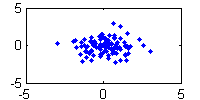
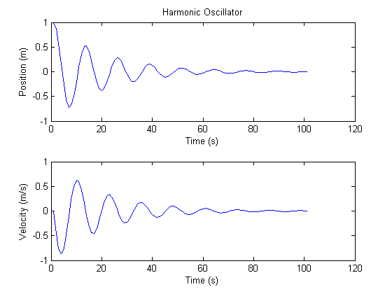

Introduction to Functional Programming with Anonymous Functions
The following document was built from posts written for the blog "Loren on the Art of MATLAB". The ideas presented below in anonymous functions have been written as .m files so that they might be placed on the MATLAB path. The .m versions are the same as below or slightly expanded where appropriate.
The best way to view this document is to open it in the MATLAB editor and click "Publish" or enter the following at the command line:
open(publish('functional_programming_examples.m'))Tucker McClure
Contents
The Goal
I use a lot of anonymous functions. They're nice and compact and almost invisible in their simplicity. Plus, if I can write an anonymous function to do something, I don't need to write a .m file, and that can save me from file clutter on larger projects and from having to send someone a dozen files instead of sending one clean script. However, it seems at first glance like anonymous functions must necessarily be simple. No if... else, while, for, or any other keywords can be used. So how could we possibly write sophisticated programs in anonymous functions? We'll see, and it will involve some ideas from functional programming.
The goal of this introduction is to demonstrate how a few of these techniques can change the way we work in MATLAB, allowing greater brevity and simultaneously increasing functionality. There are three parts. In the first part, we'll present creating functions of functions and treating functions as variables (in MATLAB, that means function handles), and from there, we'll move on to implementing conditional statements (like if... else) in anonymous functions. In the next part, we'll add recursion and executing multiple statements inside an anonymous function. In the final part, we'll develope a loop function. But first, if "function handle" or "anonymous function" is new to you, go check out Loren’s great introductions to those ideas on her blog, Loren on the Art of MATLAB.
http://blogs.mathworks.com/loren/
Part 1
Minimum and Maximum Example
Let's say we want to write a function to find the minimum and maximum of a set of numbers and store the results in an array. Here's a first pass:
min_and_max = @(x) [min(x), max(x)]; min_and_max([3 4 1 6 2])
ans =
1 6
Our min_and_max function takes in an array that we'll call x, finds the minimum and maximum, and stores the two results in an output array. Clear? Good. But now let's make it more difficult. The min and max functions both return two outputs if desired (both the minimum or maximum and the index at which they occur in the input array). Our simple min_and_max function can't get those secondary outputs! How can we access them? Consider this odd-looking line.
[extrema, indices] = cellfun(@(f) f([3 4 1 6 2]), {@min, @max})
extrema =
1 6
indices =
3 4
Well, that clearly worked. The minimum, 1, occurs at index 3. The maximum, 6, occurs at index 4, but what is this line actually doing? First, recall how cellfun behaves. The first argument is a function handle. The second argument is a cell array of whatever. Each element of the cell array is given as an argument to the provided function handle. Most of the time, that cell array is full of data, and each piece of data is passed to the function. However, we could just as easily put function handles in the cell array. Then the first function (@(f) f(...)) acts on all the other functions. So, first @min is passed in for f and the outputs from min([3 4 1 6 2]) are stored. Then, @max is passed in for f, and its outputs are stored.
Ok, now that we're working with functions of functions, let's remove that hard-coded [3 4 1 6 2] and write a new min_and_max function by simply adding a @(x) out front and changing [3 4 1 6 2] to x.
min_and_max = @(x) cellfun(@(f) f(x), {@min, @max});
We can now use min_and_max for just the extrema, like before, but we can also get the indices too.
y = randi(10, 1, 10) just_values = min_and_max(y) [~, just_indices] = min_and_max(y) [extrema, indices] = min_and_max(y)
y =
9 10 2 10 7 1 3 6 10 10
just_values =
1 10
just_indices =
6 2
extrema =
1 10
indices =
6 2
That might have looked a little funny, but it's pretty easy to think about, right? Now let's make it look a little nicer too.
Map
Above, we're mapping each function to our input x. More generally, we might write a "map" function to map a series of functions to the input values. We'll make val a cell array so we can also send multiple inputs to multiple functions all at once. This is like what we had before, but re-arranged a bit.
map = @(val, fcns) cellfun(@(f) f(val{:}), fcns);
Look how simple this makes min_and_max (below), while still accessing both outputs. Not only is it shorter to write than any other versions so far, it's easier to read, with hardly anything but a single occurrence of each variable or function name. "Map x to the min and max functions". No problem.
x = [3 4 1 6 2];
[extrema, indices] = map({x}, {@min, @max})
extrema =
1 6
indices =
3 4
Let's try multiple inputs:
map({1, 2}, {@plus, @minus, @times})
ans =
3 -1 2
What if outputs are different sizes? We'll write mapc (as in MAP with Cell array outputs) to handle this; all it needs is an extra argument to cellfun to say that our output isn't uniform in size.
mapc = @(val, fcns) cellfun(@(f) f(val{:}), fcns, 'UniformOutput', false);
Send pi to multiple functions that return differently-sized arrays. The first output is a scalar, the second is a scalar, and the third is a string.
mapc({pi}, {@(x) 2 * x, ... % Multiply by 2
@cos, ... % Find cosine
@(x) sprintf('x is %.5f...', x)}) % Return a string
ans =
[6.2832] [-1] 'x is 3.14159...'
That takes care of map, which we can now use anywhere to send a set of inputs to numerous functions and collect their multiple outputs with brief and easy-to-read code.
By the way, writing these functions that operate on other functions is part of the "functional programming" style, and we're just scratching the surface. Let's go a little deeper and see how we can write a function to choose which function to apply from a list of functions.
Inline Conditionals
Sometimes an anonymous function might need a condition, like if...else. However, normal MATLAB syntax doesn't allow program flow statements like these in anonymous functions. Hope it not lost. We can implement an "inline if" in a single line:
iif = @(varargin) varargin{2 * find([varargin{1:2:end}], 1, 'first')}();
Alright, that looks decidedly strange, so before we discuss how it works, take a look at how easy it is to use:
[out1, out2, ...] = iif( if this, then run this, ...
else if this, then run this, ...
...
else, then run this );All the "if this" conditions should evaluate to true or false. The "then run this" action next to the first true condition is executed. None of the other actions are executed! We could use this to make, for example, a safe normalization function to do the following:
- If not all values of x are finite, throw an error.
- Else if all values of x are equal to 0, return zeros.
- Else, return x/norm(x).
This is implemented below. Note the @() out in front of the actions. This means, "don't do this action, but refer to this action". That is, we're passing pieces of code to the iif function as arguments. In this way, we aren't actually doing all three things; we'll only call the action for the single case we need.
normalize = @(x) iif( ~all(isfinite(x)), @() error('Must be finite!'), ... all(x == 0), @() zeros(size(x)), ... true, @() x/norm(x) );
Test the nominal condition.
normalize([1 1 0])
ans =
0.7071 0.7071 0
Test the error condition with non-finite inputs.
try normalize([0 inf 2]), catch err, disp(err.message); end
Must be finite!
Test the all-zeros condition.
normalize([0 0 0])
ans =
0 0 0
Easy to use, right? We've implemented if... else behavior without needing an actual if or else anywhere! So now it's time to see how this thing works.
First, the iif function takes any number of arguments, thanks to varargin. These arguments will be condition 1 (true or false), action 1 (a function), condition 2, action 2, etc. First, the iif function selects all of the conditions (that's the odd numbered items in varargin) via [varargin{1:2:end}]. For our safe norm, this returns:
[~all(isfinite(x)), all(x == 0), true]
Next, it finds the index of the first true value in those conditions with find(..., 1, 'first'). E.g., if ~all(isfinite(x)) was false, but all(x == 0) was true, the index would be 2.
The actions to perform are the even-numbered items of varargin, so we just multiply that index by 2 to get the index of the action to perform. Finally, we execute the action by appending () on the end, as in
varargin{...}()Did you catch what was happening there? We're passing little pieces of code as inputs to the iif function. Functions as arguments. See why this is called "functional" programming? I'll admit it looks weird at first, but once you've seen it, the pattern is hard to forget.
Part 2
In Part 1, we said that functional programming was marked by storing functions as variables (function handles) and working with functions that act on other functions. We put these ideas together to implement our own version of a map function for handling multiple inputs and outputs from multiple functions simultaneously, and we created iif, an "inline if", to allow the use of conditional statements inside of anonymous functions. So how might we work with recursive functions -- functions of themselves? We'll see how a functional programming style allows us to implement recursive functionality inside anonymous functions, and this will pave the way for the final part, in which we'll implement loops, without ever using for or while (which we can't use in anonymous functions).
Anonymous Function Recursion
Recall that a recursive function is a function that calls itself. It therefore needs some way to refer to itself. When we write an anonymous function, it isn't "named" (hence, "anonymous"), so it can't call itself by name. How can we get around this?
Let's start with a Fibonacci sequence example. Recall that the nth number of the Fibonacci sequence is the sum of the previous two numbers, starting with 1 and 1, yielding 1, 1, 2, 3, 5, 8, 13, 21, etc. This is easy to implement recursively.
fib = @(n) iif(n <= 2, 1, ... % First two numbers
true, @() fib(n-1) + fib(n-2)); % All later numbersBut hey, that can't work! We haven't defined fib yet, so how could this anonymous function call it? In fact, the anonymous function will never "know" we're referring to it as fib, so this won't work at all. Therefore, instead of trying to call fib directly, let's provide another input: the handle of a function to call, f.
fib = @(f, n) iif(n <= 2, 1, ... % First two numbers true, @() f(f, n-1) + f(f, n-2)); % All later numbers
Getting closer. Now, if we pass fib to fib along with the number we want, it will call fib, passing in fib as the first argument, recursively until we get our answer.
fib(fib, 6)
ans =
8
Ok, that's right. The sixth number of the sequence is 8. On the other hand, the syntax we've created is terrible. We have to provide the function to itself? I'd rather not. Instead, let's just write a new function that hands fib to fib along with the input n.
fib2 = @(n) fib(fib, n); fib2(4) fib2(5) fib2(6)
ans =
3
ans =
5
ans =
8
That's a lot closer to what we want, but there's one more step. Let's write a function called recur to hand a function handle to itself, along with any other arguments. This makes recursion less cumbersome.
recur = @(f, varargin) f(f, varargin{:});
That was simple, so now let's re-write fib. The first argument to recur is the function, which we'll define inline. The second is n. That's all there is to it. It now reads as "Recursively call a function that, if k <= 2, returns one, and otherwise returns the recursive function of k-1 plus that of k-2, starting with the user's input n." (If it doesn't read quite this clearly at first, that's ok. It takes some getting used to. Comment liberally if necessary!)
fib = @(n) recur(@(f, k) iif(k <= 2, 1, ... true, @() f(f, k-1) + f(f, k-2)), ... n);
And we can find the first ten numbers of the sequence via arrayfun.
arrayfun(fib, 1:10)
ans =
1 1 2 3 5 8 13 21 34 55
Factorial (f(n) = 1 * 2 * 3 * ... n) is another easy operation to represent recursively.
factorial = @(n) recur(@(f, k) iif(k == 0, 1, ...
true, @() k * f(f, k-1)), n);
arrayfun(factorial, 1:7)
ans =
Columns 1 through 6
1 2 6 24 120 720
Column 7
5040
A number to an integer power has a nearly identical form. Here's 4.^(0:5).
pow = @(x, n) recur(@(f, k) iif(k == 0, 1, ...
true, @() x * f(f, k-1)), n);
arrayfun(@(n) pow(4, n), 0:5)
ans =
1 4 16 64 256 1024
That was a big step for anonymous functions, using both recursion and an inline conditional together with ease. Like map and iif, recur, looks strange at first, but once it's been seen, it's hard to forget how it works (just make one of the inputs a function handle and pass it to itself). And recursion doesn't have to stop at interesting mathematical sequences of numbers. For instance, in the next part, we'll use this to implement loops in, but first, we'll need a some helper functions and a good way to execute multiple statements in an anonymous function.
Helpers
These little functions are useful in many circumstances, and we're going to need curly frequently.
paren = @(x, varargin) x(varargin{:});
curly = @(x, varargin) x{varargin{:}};
They allow us to write x(3, 4) as paren(x, 3, 4) and similarly for curly braces. That is, now we can think of parentheses and curly braces as functions! At first this might not seem useful. However, imagine writing a function to return the width and height of the screen. The data we need is available from this call:
get(0, 'ScreenSize')
ans =
1 1 1600 900
However, we don't need those preceeding ones. We could save the output to a variable, say x, and then access x(3:4), but if we need this in an anonymous function, we can't save to a variable. How do we access just elements 3 and 4? There are numerous ways, but paren and curly are similar to constructs found in other languages and are easy to use, so we'll use those here.
Now we can write our screen_size function to return just the data we want.
screen_size = @() paren(get(0, 'ScreenSize'), 3:4);
screen_size()
ans =
1600 900
While on the subject, note that we can actually use any number of indices or even ':'.
magic(3) paren(magic(3), 1:2, 2:3) paren(magic(3), 1:2, :)
ans =
8 1 6
3 5 7
4 9 2
ans =
1 6
5 7
ans =
8 1 6
3 5 7
We do the same with the curly braces. Here, the regular expression pattern will match both 'rain' and 'Spain', but we'll only select the second match.
spain = curly(regexp('The rain in Spain....', '\s(\S+ain)', 'tokens'), 2)
spain =
'Spain'
It also works with ':' (note that the single quotes are required).
[a, b] = curly({'the_letter_a', 'the_letter_b'}, ':')
a = the_letter_a b = the_letter_b
Executing Multiple Statements
With curly in place, let's examine something a little different. Consider the following:
do_three_things = @() {fprintf('This is the first thing.\n'), ...
fprintf('This is the second thing.\n'), ...
max(eig(magic(3)))};
do_three_things()
This is the first thing.
This is the second thing.
ans =
[25] [26] [15.0000]
We've executed three statements on a single line. All of the outputs are stored in the cell array (note that the output from fprintf is a number, but we don't care what it means here).
Let's say we want to write a function to:
- Create a small figure in the middle of the screen
- Plot some random points
- Return the handles of the figure and the plot
Then by storing all of the outputs in a cell array and using curly to access the outputs we care about, we can make a multi-line function with multiple outputs, all in a simple anonymous funciton.
dots = @() curly({...
figure('Position', [0.5*screen_size() - [100 50], 200, 100], ...
'MenuBar', 'none'), ... % Position the figure
plot(randn(1, 100), randn(1, 100), '.')}, ... % Plot random points
':'); % Return everything
[h_figure, h_dots] = dots()
h_figure =
1
h_dots =
177.0016
 (As a quick aside, note that if a statement doesn't return anything, we can't put it in a cell array, and so we can't use it this way. There are ways around this; one is to use the included void function. See help void for details.)
That takes care of recursion and multi-line statements in anonymous functions, so now we're ready for loops.
close all;
Part 3
Loops
Note that the recursive sequences we created in the last part could also have been implemented with for loops. For instance, here's factorial of n:
factorial = 1;
for k = 1:n
factorial = k * factorial;
endMany times, recursive functions can be written iteratively in loops. However, we can't use for or while in an anonymous function, so instead of asking how we can unwrap recursive functions into iterative loops, let's ask the reverse: how can we implement loops with recursive functions?
Loops via Recursion
To loop properly, one must know:
- What to do each iteration
- If the process should continue to the next iteration
- What's available when the loop begins
Allowing the "what to do" to be a function (fcn) of some state (x), the "if it should continue" to be another function (cont) of the state, and "what's available when the loop begins" to be the initial state (x0), we can write a loop function.
On each step, the loop function will call the cont function. If that returns false (i.e., we shouldn't continue), the current state, x, is returned. Otherwise, if we should continue, it calls fcn on the current state, and passes the output from that to the next iteration. Letting this single iteration be denoted as f, it's easy to build the anonymous function loop using our recur function.
loop = @(x0, cont, fcn) ... % Header recur(@(f, x) iif( ~cont(x), x, ... % Continue? true, @() f(f, fcn(x)) ), ... % Iterate x0); % from x0.
For this trivial example, the state is simply the iteration count. We'll increase the count every iteration until the count >= n and return the final count. All this does therefore is count from 0 to the input n. Not very interesting, but it demonstrates the loop.
count = @(n) loop(0, ... % Initialize state, k, to 0 @(k) k < n, ... % While k < n @(k) k + 1); % k = k + 1 arrayfun(count, 1:10)
ans =
1 2 3 4 5 6 7 8 9 10
Recall from the last part that we can implement multiple statements inside a cell array and can then return whatever output we need. We'll use that technique here to make our loops have more complex behavior.
In the example below, the state is still the iteration count, but on each iteration, we'll print something out, storing its result (a number) in the first position of a cell array, and we'll add 1 to k, storing the result in the second position. We'll use curly to return only the second position. In this way, on every iteration, we'll print something and update the counter. Here's the pseudocode.
Set k to 1.
While k <= 4
Print something out.
Store k+1. <- Return this value as k
EndThe code then proceeds this way:
pets = {'cat', 'dog', 'bird', 'fish'};
describe_pet = @(pet) fprintf('I have a %s.\n', pet);
declare_my_pets = @() loop(... % Loop
1, ... % From k = 1
@(k) k <= 4, ... % While k <= 4
@(k) curly({ describe_pet(pets{k}), ... % Step 1: Print something
k + 1 }, ... % Step 2: Add 1 to k
2)); % Return output from step 2
% Call our anonymous function that loops.
declare_my_pets();
I have a cat. I have a dog. I have a bird. I have a fish.
I'll be the first to admit that the loop is a bit longer and much more rigid than a normal MATLAB loop. On the other hand, it can be used in anonymous functions, and its syntax has a certain cleanliness to it in that it doesn't modify any variables that live outside the loop; it has its own scope. This is one nice feature of loop being a function that takes code (functions) as arguments.
Consider that the state we're using could be anything, whether a simple scalar that keeps a count of the number of iterations like those above, a cell array holding multiple values, a structure, or even an object. We'll use and update this state on every iteration. When we're done, the state is returned. Before we show the use of more complex states though, let's first make a better loop.
A Better Loop
Let's make handling the state a bit easier. If instead of handing x into the functions, we let x be a cell array of arguments to those functions, things get a little easier to use. Then, fcn must return a cell array of arguments to the next call to fcn or cont. All we have to do to implement this is append {:} to the end of x when we use it. The factorial example below makes this much clearer.
As one final convenience, instead of returning the full state at the very end, we'll add a cleanup function to only return the important parts of the state. For instance, the state might contain an iteration counter, but we don't need this after the loop is done, so the cleanup will simply not return this part.
loop = @(x0, cont, fcn, cleanup) ... % Header recur(@(f, x) iif(~cont(x{:}), cleanup(x{:}), ... % Continue? true, @() f(f, fcn(x{:}))), ... % Iterate x0); % from x0.
For this implementation of factorial, we'll keep our iteration count, k, and the previous products, x, in a cell array. According to the change we made above, this means x and k will be handed to our functions now.
factorial = @(n) loop({1, 1}, ... % Start with k = 1 and x = 1
@(k,x) k <= n, ... % While k <= n
@(k,x) {k + 1, ... % k = k + 1;
k * x}, ... % x = k * x;
@(k,x) x); % End, returning x
% First 7 numbers of the factorial sequence
arrayfun(factorial, 1:7)
ans =
Columns 1 through 6
1 2 6 24 120 720
Column 7
5040
As a practical note, recall that because these loops use recursion, there's a limit to the number of times they can loop (MATLAB has a recursion limit, which is a setting in Preferences). Also, a recursive implementation of a loop isn't the most efficient. For this reason, it's best to implement loop as a .m file that can then be used in the same way.
function x = loop(x, cont, f, cleanup)
while ~cont(x{:})
x = f(x{:});
end
if nargin == 4
x = cleanup(x{:});
end
endThis brings us to our final example. Below, we'll simulate a simple harmonic oscillator, using a structure to store dissimilar states, including a complete time history of the oscillator.
% First, calculate a state transition matrix that represents a harmonic % oscillator with damping. Phi = expm(0.5*[0 1; -1 -0.2]); % Now create the loop. x = loop({[1; 0], 1}, ... % Initial state @(x,k) k <= 100, ... % While k <= 100 @(x,k) {[x, Phi * x(:, end)], ... % Update x k + 1}, ... % Update k @(x,k) x); % End, return x % Create a plot function. plot_it = @(n, x, y, t) {subplot(2, 1, n), ... % Select subplot. plot(x), ... % Plot the data. iif(nargin==4, @() title(t), ... % If there's a true, []), ... % title, add it. ylabel(y), ... % Label y xlabel('Time (s)')}; % and x axes. % Plot the result. plot_it(1, x(1, :), 'Position (m)', 'Harmonic Oscillator'); plot_it(2, x(2, :), 'Velocity (m/s)');
That's it for loops via recursion!
Summary
Let's look back at what we did over these three parts. First, we started with a simple map utility function to demonstrate the function-of-functions idea. Then we created our ubiquitous inline if, which further enabled recursion (a conditional is necessary to make recursion stop!). We also showed using multiple statements by storing their outputs in a cell array. Finally, we created a loop construct on top of our recursion functions. Here they are as brief anonymous function.
map = @(val, fcns) cellfun(@(f) f(val{:}), fcns);
mapc = @(val, fcns) cellfun(@(f) f(val{:}), fcns, 'UniformOutput', false);
iif = @(varargin) varargin{2*find([varargin{1:2:end}], 1, 'first')}();
recur = @(f, varargin) f(f, varargin{:});
paren = @(x, varargin) x(varargin{:});
curly = @(x, varargin) x{varargin{:}};
loop = @(x,c,f,r) recur(@(g,y) iif(~c(y{:}),r(y{:}),1,@()g(g,f(y{:}))),x);
At this point, we've done more than just scratch the surface of functional programming. We've used MATLAB's interesting constructs, such as function handles, cell arrays, and varargin to implement a functional programming framework, allowing a new syntax within MATLAB, where code can be arguments to flow control functions.
Thanks for reading. I hope this has both enabled a new level of detail in anonymous functions in MATLAB and helped demonstrate the wide range of possibilities available within the MATLAB language.
Enjoy!
- Tucker McClure
Addendum
Several additional files are included with the File Exchange submission that weren't included in the blog posts. These include (documentation will appear in the command window):
- dowhile (matlab:clc;help('dowhile'))
- forloop (matlab:clc;help('forloop'))
- last (matlab:clc;help('last'))
- output (matlab:clc;help('output'))
- tern (matlab:clc;help('tern'))
- use (matlab:clc;help('use'))
- void (matlab:clc;help('void'))
- wrap (matlab:clc;help('wrap'))
Each contains its own documention and examples.